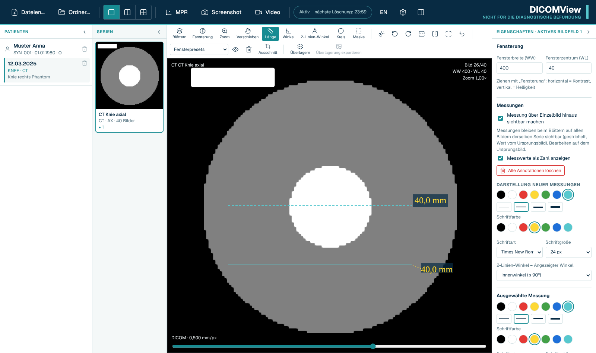
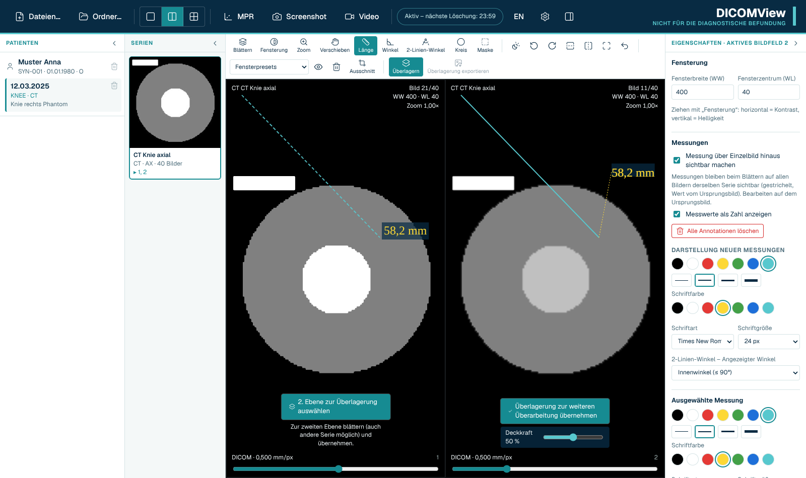
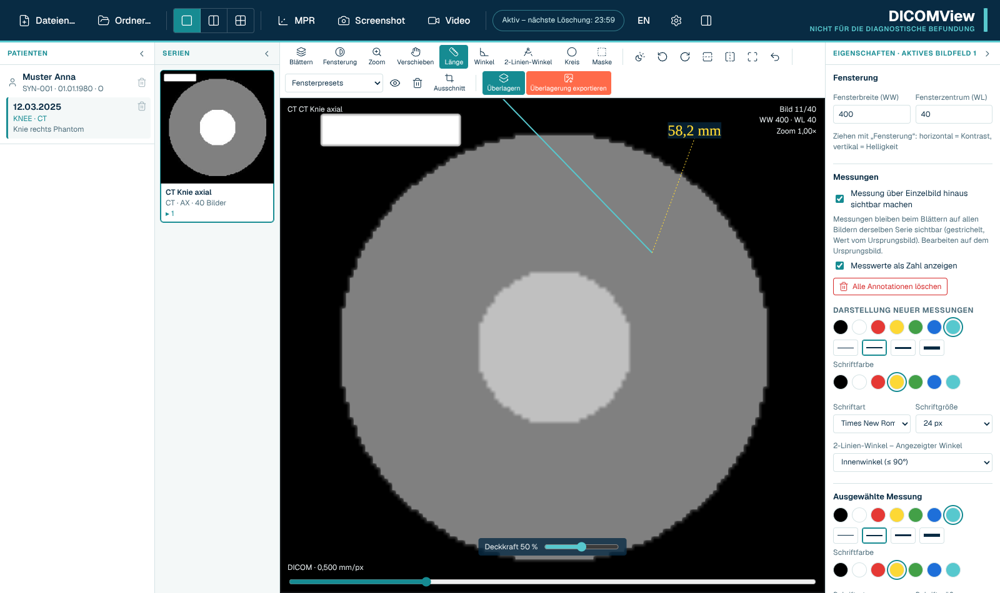
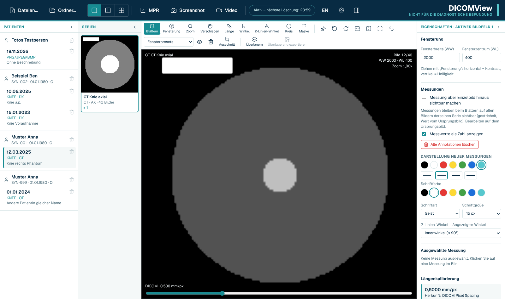
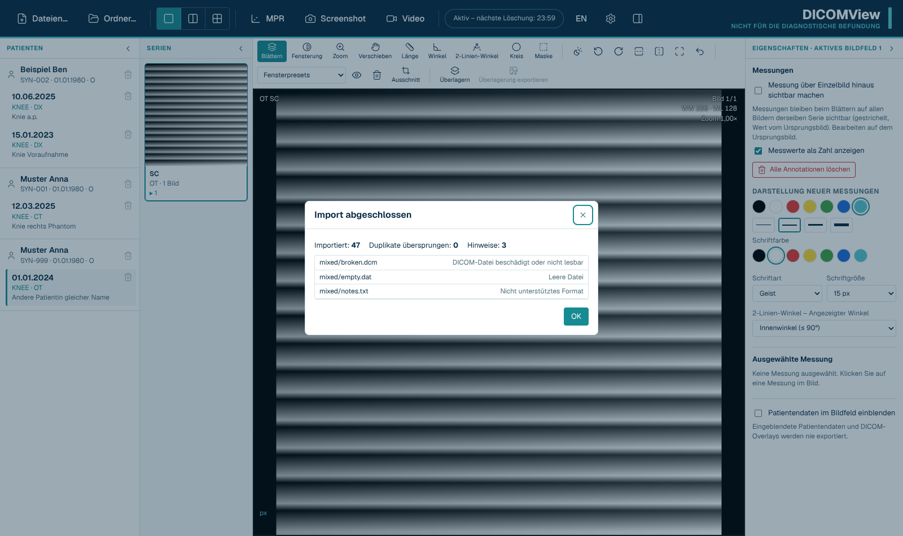
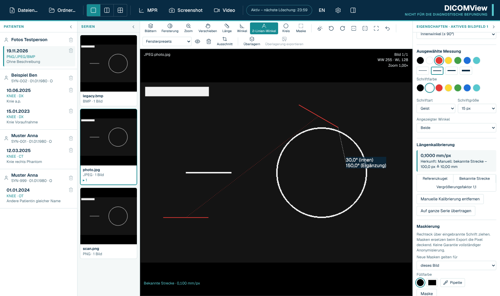
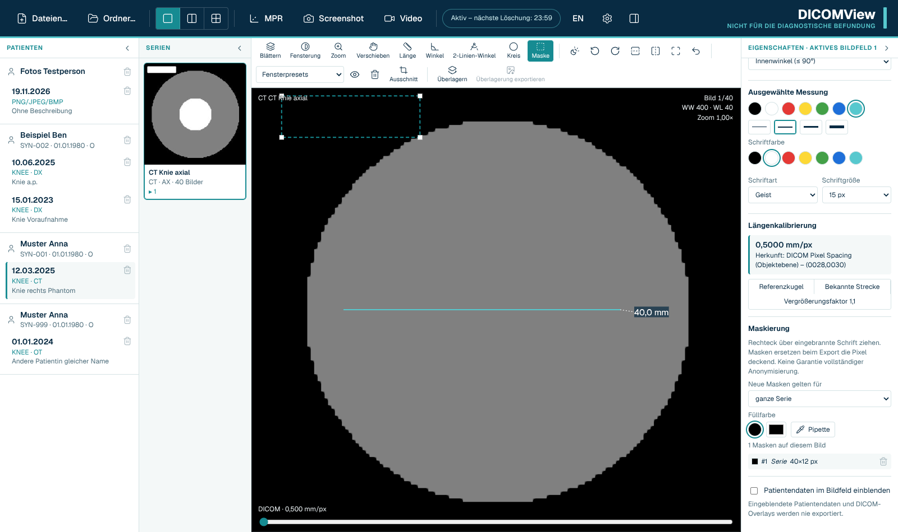
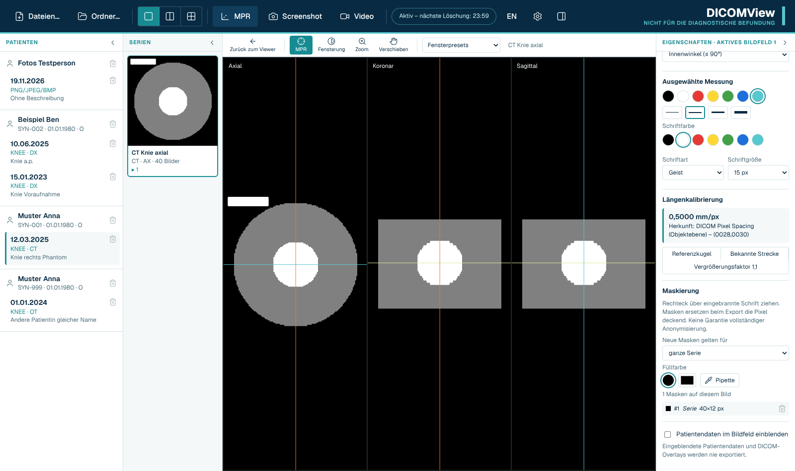

DICOM- und Bildviewer für Vorträge und Publikationen
Version 2.0 · November 2026
Medizinische Präzision. Menschlich erklärt.
Prof. Dr. med. Philipp Niemeyer
Nicht für die diagnostische Befundung bestimmt.
Inhalt
Was Sie in diesem Handbuch finden
Kapitel 02 beschreibt alle Neuerungen der Version 2.0 mit Schritt-für-Schritt-Anleitungen. Die übrigen Kapitel erklären die gesamte Bedienung.
01Überblick und Datenschutz
02Neuerungen in Version 2.0
03Erste Schritte und Aufbau der Oberfläche
04Bilder importieren
05Patienten, Untersuchungen und Serien
06Bilder betrachten
07Messen und Kalibrieren
08Patientendaten maskieren
09Exportieren: Screenshot und Video
10MPR – multiplanare Rekonstruktion
11Speicher, tägliche Löschung und Einstellungen
12Tastenkürzel
13Grenzen und häufige Fragen
01 · Überblick
Ein Viewer, der Ihre Daten auf dem Gerät lässt
DICOMView zeigt DICOM-Bilder (CT, MRT, Röntgen) und Fotos (JPEG, PNG, BMP) für die Vorbereitung von Vorträgen und Publikationen. Die App ist nicht für die diagnostische Befundung bestimmt.
Datenschutz
Alle Bilder, Patientendaten, Messungen und Exporte werden ausschließlich lokal in Ihrem Browser verarbeitet. Es wird nichts auf einen Server hochgeladen, und es laufen keine Analyse-, KI- oder Texterkennungsdienste. Der lokale Arbeitsbestand wird standardmäßig jeden Tag um 23:59 Uhr automatisch gelöscht.
Browser und Aufruf
Empfohlen ist Google Chrome auf dem Mac; Safari ab Version 16.4 wird ebenfalls unterstützt. Windows und iPad sind für eine spätere Version vorgesehen. Öffnen Sie die Adresse der App im Browser, eine Installation ist nicht nötig. Die Oberfläche ist auf Deutsch und Englisch verfügbar; die Sprache wechseln Sie oben rechts mit EN bzw. DE.
02 · Neu in Version 2.0
Neuerungen in Version 2.0
2.0
fünf neue Funktionen plus neues Erscheinungsbild
Mitgeführte Messungen, gestaltbare Beschriftung, schnelles Zurücksetzen und das semitransparente Überlagern zweier Bilder.
Die Messungs-Optionen finden Sie im rechten Eigenschaften-Bereich im Abschnitt „Messungen“, das Überlagern über den Knopf „Überlagern“ in der Werkzeugleiste.
Neuerung
Wo
Wozu
Messung über Einzelbild hinaus sichtbar
Messungen
Linien bleiben beim Blättern sichtbar
Messwerte als Zahl anzeigen
Messungen
Zahl ein- oder ausblenden
Schriftfarbe, -art, -größe
Messungen · Ausgewählte Messung
Beschriftung gestalten
Alle Annotationen löschen
Messungen
Serie oder alles auf einmal zurücksetzen
Bilder semitransparent überlagern
Werkzeugleiste
Zwei Ebenen übereinanderlegen, als JPEG exportieren
Neues Erscheinungsbild
Kopfleiste · Startfläche
Name DICOMView, größere Kopfleiste
Messung über Einzelbild hinaus sichtbar machen
Mit dieser Option bleibt eine Messung beim Blättern auf allen Bildern derselben Serie sichtbar. So setzen Sie zum Beispiel in einer MRT-Serie auf Bild 12 eine Linie, blättern auf Bild 18 und messen dort eine zweite Linie oder einen Winkel dazu, während die erste Linie sichtbar bleibt.
Klicken Sie im rechten Bereich unter Messungen das Kästchen „Messung über Einzelbild hinaus sichtbar machen“ an.
Setzen Sie auf einem Bild eine Messung, z. B. mit Länge (L).
Blättern Sie mit Mausrad, Pfeiltasten oder Schieberegler auf ein anderes Bild der Serie. Die Messung erscheint dort gestrichelt, mit dem Wert vom Ursprungsbild.
Messen Sie auf diesem Bild weiter, etwa mit Winkel oder 2-Linien-Winkel.

Abb. 1 · Die Linie aus Bild 21 erscheint auf Bild 26 gestrichelt; darunter eine neue Messung auf Bild 26. Synthetische Testdaten.
Gut zu wissen
Die Option gilt sofort für alle Messungen, auch für bereits vorhandene, und bleibt gespeichert, bis Sie sie abwählen.
Mitgeführt wird nur innerhalb derselben Serie, also derselben Schnittebene. In einer anderen Serie (z. B. koronar statt axial) erscheint die Linie nicht.
Gestrichelte Messungen dienen der Orientierung. Verschieben, bearbeiten oder löschen können Sie eine Messung nur auf ihrem Ursprungsbild (durchgezogene Linie).
Mitgeführte Messungen sind auch in Screenshot und Video enthalten, sofern Sie „Mit Messungen“ exportieren.
Messwerte als Zahl anzeigen
Standardmäßig steht neben jeder Messung ihr Wert, z. B. „40,0 mm“ oder „30,0° (innen)“. Für Abbildungen, die nur die Linien zeigen sollen, blenden Sie die Zahlen aus.
Entfernen Sie unter Messungen den Haken bei „Messwerte als Zahl anzeigen“.
Alle Messungen zeigen nun nur noch Linien, Winkelschenkel und Kreise. Das gilt auch für Screenshot und Video.
Setzen Sie den Haken wieder, um die Werte erneut anzuzeigen. Die Messungen selbst bleiben unverändert.
Schriftfarbe, Schriftart und Schriftgröße
Die Beschriftung der Messwerte gestalten Sie jetzt unabhängig von der Linienfarbe.
Für neue Messungen
Wählen Sie unter Messungen → Darstellung neuer Messungen bei Schriftfarbe eine der sieben Farben (Schwarz, Weiß, Rot, Gelb, Grün, Blau, Türkis).
Wählen Sie bei Schriftart zwischen Geist, DM Sans, Arial, Helvetica, Times New Roman und Courier New.
Wählen Sie bei Schriftgröße einen Wert zwischen 10 und 32 px.
Jede Messung, die Sie danach anlegen, übernimmt diese Einstellungen.
Für eine einzelne vorhandene Messung
Klicken Sie die Messung im Bild an, damit sie ausgewählt ist.
Ändern Sie unter Ausgewählte Messung Linienfarbe, Linienstärke, Schriftfarbe, Schriftart oder Schriftgröße. Die Änderung wirkt sofort.
Beim Export als Bild können Geist und DM Sans durch eine ähnliche Standardschrift ersetzt werden; Arial, Helvetica, Times und Courier erscheinen unverändert.
Alle Annotationen löschen
Mit einem Klick setzen Sie alle Messungen zurück, ohne jede einzeln löschen zu müssen.
Klicken Sie unter Messungen auf „Alle Annotationen löschen“.
Wählen Sie den Umfang: Nur diese Serie löscht alle Messungen der Serie im aktiven Bildfeld; Alle Untersuchungen löscht sämtliche Messungen im Arbeitsbestand.
Mit Abbrechen bleibt alles unverändert.
Wichtig
Das Löschen kann nicht rückgängig gemacht werden. Masken zur Anonymisierung werden nicht gelöscht, damit nicht versehentlich Patientendaten sichtbar werden. Eine einzelne Messung löschen Sie wie bisher durch Auswählen und Entf.
Bilder semitransparent überlagern
Der neue Modus legt zwei Bilder halbdurchsichtig übereinander – zum Beispiel zwei Schichten einer MRT-Serie, eine MRT- und eine CT-Ebene oder in seltenen Fällen zwei Röntgenbilder. Auf der Überlagerung messen Sie wie gewohnt und exportieren sie anschließend als JPEG.
Schritt 1Modus einschalten
Klicken Sie in der Werkzeugleiste auf „Überlagern“. Der Knopf wird türkis.
Die Ansicht wechselt automatisch in zwei Bildfelder: links die Bildauswahl, rechts die Überlagerung.
Schritt 2Erstes Bild wählen
Laden Sie links die gewünschte Serie (Vorschaubild anklicken) und blättern Sie zum gewünschten Bild.
Klicken Sie unten im linken Bild auf „Bild zur Überlagerung übernehmen“.
Das Bild erscheint zusätzlich rechts. Der Knopf links ändert sich zu „2. Ebene zur Überlagerung auswählen“.
Schritt 3Zweite Ebene wählen
Blättern Sie links zur zweiten Ebene; dafür können Sie auch eine andere Serie oder Untersuchung laden.
Klicken Sie auf „2. Ebene zur Überlagerung auswählen“. Rechts wird sie mit 50 % Deckkraft über das erste Bild gelegt.
Mit dem Regler Deckkraft im rechten Bild stellen Sie die Transparenz zwischen 0 und 100 % ein.
Passt die Ebene nicht, wählen Sie links eine andere und klicken erneut. Die Messwerkzeuge funktionieren rechts wie gewohnt.

Abb. 2 · Links Bildauswahl, rechts das erste Bild mit überlagerter zweiter Ebene (50 %) und einer Messung. Synthetische Testdaten.
Schritt 4Überlagerung übernehmen
Klicken Sie im rechten Bild auf „Überlagerung zur weiteren Überarbeitung übernehmen“.
Die Ansicht wechselt in ein einzelnes großes Bildfeld; das linke Auswahlfeld wird ausgeblendet.
Messen, zoomen, drehen und maskieren Sie nun wie gewohnt weiter.
Schritt 5Überlagertes Bild exportieren
Der Knopf „Überlagerung exportieren“ in der Werkzeugleiste ist jetzt aktiv und orange hervorgehoben.
Klicken Sie darauf und wählen Sie „Mit Annotationen“ oder „Ohne Annotationen“.
Die Darstellung wird als JPEG in Originalauflösung in Ihren Download-Ordner gespeichert – mit neutralem Dateinamen ohne Patientennamen.

Abb. 3 · Übernommene Überlagerung im 1-Feld-Modus; der Export-Knopf ist hervorgehoben. Synthetische Testdaten.
Gut zu wissen
Die zweite Ebene wird mit ihrer aktuellen Fensterung und ihren Masken übernommen. Stellen Sie die Fensterung links ein, bevor Sie übernehmen.
Sie wird zentriert in die Fläche des ersten Bildes eingepasst. Eine automatische geometrische Ausrichtung (Registrierung) findet nicht statt.
Die Überlagerung ist an das erste Bild gebunden. Blättern Sie im Überlagerungsfeld weg, verschwindet sie; beim Zurückblättern ist sie wieder da.
Messungen auf der Überlagerung gehören zum ersten Bild und nutzen dessen Maßstab. Zum Beenden des Modus klicken Sie erneut auf „Überlagern“.
Neues Erscheinungsbild
Die App heißt jetzt DICOMView; der Name steht oben rechts in der Kopfleiste.
Die Kopfleiste ist größer. In schmaleren Fenstern (unter ca. 1440 px) zeigen ihre Knöpfe nur das Symbol, der Name erscheint beim Überfahren mit der Maus.
Die Startfläche zum Hochladen ist in den Markenfarben gestaltet. Sobald Bilder geladen sind, bleibt der Bildbereich neutral dunkel.
Beim Wechsel zwischen 1, 2 und 4 Bildfeldern passt sich das Bild automatisch an die neue Feldgröße an.
03 · Erste Schritte
In einer Minute zum ersten Bild
App öffnen, Dateien oder einen Ordner in die Startfläche ziehen, im Importdialog „OK“ klicken – die erste Serie wird automatisch angezeigt.

Abb. 4 · Aufbau der Oberfläche mit geladener CT-Serie. Synthetische Testdaten.
Bereich
Inhalt
Kopfleiste
Import (Dateien…, Ordner…), Layout 1/2/4 Felder, MPR, Screenshot, Video, nächste Löschung, Sprache, Einstellungen, rechter Bereich ein/aus; ganz rechts der Name DICOMView
Patienten
Patienten und ihre Untersuchungen, neueste zuerst
Serien
Vorschaubilder der Serien der gewählten Untersuchung
Patienten, Serien und Eigenschaften lassen sich mit dem Pfeil in ihrer Kopfzeile einklappen. Im Bildfeld stehen oben links Modalität und Serienname, oben rechts Bildnummer, Fensterbreite (WW), Fensterzentrum (WL) und Zoom, unten links der aktive Maßstab, darunter ein Schieberegler zum Blättern.
04 · Import
Bilder importieren
Importieren Sie einzelne Dateien, ganze Ordner mit Unterordnern oder ZIP-Archive – per Drag & Drop oder über „Dateien…“ bzw. „Ordner…“ in der Kopfleiste.
Ziehen Sie Dateien, einen Ordner (z. B. eine Patienten-CD) oder ein ZIP-Archiv in das Browserfenster, oder klicken Sie auf Dateien… bzw. Ordner….
Der Importdialog zeigt den Fortschritt. Mit Abbrechen stoppen Sie den Import; bereits importierte Dateien bleiben erhalten.
Am Ende sehen Sie, wie viele Bilder importiert und wie viele Duplikate übersprungen wurden, sowie Hinweise zu nicht lesbaren Dateien.
Klicken Sie OK.

Abb. 5 · Importergebnis mit verständlichen Hinweisen zu fehlerhaften Dateien. Synthetische Testdaten.
Unterstützte Formate: DICOM (auch ohne Dateiendung, mit den gängigen Kompressionen JPEG, JPEG-LS, JPEG 2000, RLE, Deflate), JPEG, PNG und BMP sowie ZIP-Archive mit diesen Dateien. Ein DICOMDIR wird erkannt; die Zuordnung erfolgt über die Angaben in den einzelnen Dateien.
Fotos und Bilddateien zuordnen
JPEG-, PNG- und BMP-Dateien enthalten keine Patientenangaben. Nach dem Import öffnet sich deshalb der Dialog Bilddateien zuordnen:
Wählen Sie Bestehender Patient oder Neuer Patient (Name/Bezeichnung, optional eine ID).
Wählen Sie Bestehende Untersuchung oder Neue Untersuchung mit Datum und Beschreibung.
Klicken Sie Zuordnen. Mit Später landen die Bilder unter einem eigenen Eintrag.
Hinweise
Eine fehlerhafte Datei bricht den Import nicht ab; sie erscheint mit Begründung in der Hinweisliste.
Bereits vorhandene Bilder werden als Duplikat erkannt und nicht doppelt gespeichert.
Sehr große oder ungewöhnlich stark komprimierte ZIP-Archive werden zum Schutz nicht entpackt.
Einzelne Dateien dürfen bis zu 600 MB groß sein; die Gesamtmenge regelt das Arbeitslimit (Kapitel 11).
05 · Patienten und Serien
Patienten, Untersuchungen und Serien
Die Daten sind geordnet nach Patient → Untersuchung → Serie → Einzelbilder. Patienten werden über ihre Patienten-ID zugeordnet; zwei Personen mit gleichem Namen werden nie zusammengeführt.
Untersuchung öffnen: Klicken Sie links auf eine Untersuchung. Sie sehen zuerst das Datum, darunter Körperregion/Modalität und Beschreibung. Die Untersuchungen eines Patienten stehen neueste zuerst.
Serie anzeigen: Klicken Sie in der Serienliste auf ein Vorschaubild – die Serie erscheint im aktiven Bildfeld – oder ziehen Sie es in ein beliebiges Feld. Unter dem Vorschaubild stehen Bezeichnung, Modalität, Orientierung (AX, COR, SAG) und Bildanzahl; „▸ 1“ zeigt, in welchem Feld die Serie läuft.
Entfernen: Mit dem Papierkorb neben einem Patienten oder einer Untersuchung entfernen Sie diese aus dem lokalen Arbeitsbestand. Ihre Originaldateien bleiben unverändert.
06 · Bilder betrachten
Bilder betrachten
Alle Darstellungsänderungen sind nicht-destruktiv; die Originaldaten bleiben unverändert.
Aktion
Maus / Trackpad
Werkzeugleiste / Taste
Blättern
Mausrad, Zwei-Finger-Scrollen, Schieberegler
Blättern S, Pfeiltasten, Bild↑Bild↓
Zoom
Strg + Scrollen, Pinch, rechte Maustaste ziehen
Zoom Z
Verschieben
mittlere Maustaste ziehen
Verschieben P
Helligkeit/Kontrast
Shift + Ziehen
Fensterung W
Invertieren
–
I
Drehen
–
R · Shift+R
Spiegeln
–
horizontal H · vertikal V
Anpassen / Zurücksetzen
–
F · 0
Fensterung: Mit dem Werkzeug Fensterung verändert horizontales Ziehen den Kontrast, vertikales die Helligkeit. Bei CT stehen unter Fensterpresets Werte für Weichteil, Lunge, Knochen, Gehirn, Abdomen, Leber und Mediastinum bereit; Standard (DICOM) stellt die Werte aus der Datei wieder her. Exakte Werte geben Sie rechts unter Fensterung (WW/WL) ein.
Mehrere Bildfelder: Mit den Layout-Knöpfen (oder 124) wechseln Sie zwischen einem, zwei und vier Feldern. Ein Klick in ein Feld macht es zum aktiven Feld (türkis Rahmen); Werkzeuge, Presets und Export beziehen sich auf dieses Feld.
07 · Messen
Messen und Kalibrieren
Vier Messwerkzeuge stehen zur Verfügung. Werte erscheinen in Millimetern, wenn ein gültiger Maßstab vorliegt, sonst in Pixeln. Flächenmessungen gibt es bewusst nicht.
Werkzeug
Taste
So geht’s
Länge
L
Vom Start- zum Endpunkt ziehen
Winkel (3 Punkte)
A
Drei Punkte nacheinander klicken; der mittlere ist der Scheitel
2-Linien-Winkel
C
Erste Linie ziehen, dann zweite – die Linien müssen sich nicht berühren
Kreis
O
Vom Mittelpunkt zum Rand ziehen; angezeigt wird der Durchmesser Ø
Bearbeiten: Klicken Sie eine Messung an, um sie auszuwählen. Ziehen Sie an einem Endpunkt, um sie zu ändern, an der Linie, um sie zu verschieben, oder am Textfeld, um die Beschriftung zu versetzen. Entf löscht die ausgewählte Messung; das Augen-Symbol blendet alle Messungen aus und ein.
2-Linien-Winkel: Unter Ausgewählte Messung → Angezeigter Winkel wählen Sie Innenwinkel (≤ 90°), Ergänzungswinkel (≥ 90°) oder Beide; die Beschriftung zeigt eindeutig „(innen)“ bzw. „(Ergänzung)“.

Abb. 6 · 2-Linien-Winkel mit Innen- und Ergänzungswinkel; rechts die Kalibrierung „bekannte Strecke“. Synthetische Testdaten.
Maßstab und Kalibrierung
Rechts unter Längenkalibrierung sehen Sie den aktiven Maßstab und seine Herkunft, z. B. „DICOM Pixel Spacing (Objektebene)“. Ohne gültigen Maßstab, etwa bei Fotos, zeigt die App nur Pixelwerte. Manuelle Kalibrierungen gelten zunächst nur für das aktuelle Bild.
AReferenzkugel
Zeichnen Sie mit Kreis einen Kreis passgenau um die Kugel und klicken Sie ihn an.
Wählen Sie Referenzkugel, geben Sie den tatsächlichen Durchmesser in mm ein und klicken Sie Zusammenfassung.
Prüfen Sie bisherigen und neuen Maßstab und klicken Sie Übernehmen.
BVergrößerungsfaktor 1,1
Konvention: Abbildungslänge = Objektlänge × 1,1. Der Faktor ist nur verfügbar, wenn das Bild eine physikalisch bekannte Abbildungslänge hat (z. B. Röntgen mit Imager Pixel Spacing). Ohne Maßstab oder wenn die Vergrößerung bereits berücksichtigt ist, wird er mit Begründung abgelehnt und nie doppelt angewendet.
Wählen Sie Vergrößerungsfaktor 1,1 und klicken Sie Faktor 1,1 anwenden.
Messwerte tragen dann den Zusatz „(÷1,1)“, unten im Bild steht „×1/1,1“.
CBekannte Strecke
Markieren Sie die Strecke mit Länge und klicken Sie sie an.
Wählen Sie Bekannte Strecke, geben Sie die tatsächliche Länge in mm ein, klicken Sie Zusammenfassung und Übernehmen.
Auf Serie übertragen: Nach einer manuellen Kalibrierung erscheint Auf ganze Serie übertragen – nur möglich, wenn alle Bilder der Serie dieselbe Geometrie haben. Manuelle Kalibrierung entfernen stellt den ursprünglichen Maßstab wieder her.
08 · Maskieren
Patientendaten maskieren
Eingebrannte Schrift wie Name, Geburtsdatum oder Klinik decken Sie mit Masken ab. Masken ersetzen beim Export die Pixel tatsächlich und bleiben auch bei späterer Aufhellung deckend.
Wählen Sie das Werkzeug Maske (M).
Legen Sie rechts unter Maskierung fest, ob neue Masken für dieses Bild oder die ganze Serie gelten.
Wählen Sie die Füllfarbe: Schwarz, eine freie Farbe oder mit der Pipette die Hintergrundfarbe direkt neben der Schrift.
Ziehen Sie im Bild ein Rechteck über die Schrift.
Zum Verschieben in die Maske klicken und ziehen, zum Skalieren an einer weißen Ecke ziehen; Entf löscht die ausgewählte Maske.
Prüfen Sie Serienmasken, indem Sie durch die Serie blättern.

Abb. 7 · Serienmaske über der eingebrannten Beschriftung oben links. Synthetische Testdaten.
Wichtig
Die manuelle Maskierung ist keine Garantie für eine vollständige Anonymisierung. Bei ungleichmäßigem Hintergrund kann die einfarbige Fläche sichtbar bleiben. Prüfen Sie vor jedem Export die Vorschau. Eingeblendete Patientendaten und DICOM-Overlays werden nie exportiert; „Alle Annotationen löschen“ entfernt keine Masken.
09 · Export
Exportieren: Screenshot und Video
Exporte landen über den normalen Browser-Download in Ihrem Download-Ordner, mit neutralem Dateinamen ohne Patientennamen. Werkzeugleisten, Listen und eingeblendete Patientendaten werden nie exportiert; Masken sind immer enthalten.
Screenshot
Klicken Sie in der Kopfleiste auf Screenshot.
Wählen Sie den Bereich: Aktives Bildfeld, Gesamte Vergleichsansicht (bei 2 oder 4 Feldern) oder Gewählter Ausschnitt – dafür Ausschnitt wählen klicken und im Bild ein Rechteck aufziehen.
Haken Sie Mit Messungen und Annotationen an oder ab.
Wählen Sie die Auflösung: Originalauflösung (1 Bildpunkt = 1 Exportpunkt) oder 1–4-fache Bildschirmgröße; die Pixelzahl wird angezeigt.
Wählen Sie PNG oder JPEG (mit einstellbarer Qualität).
Prüfen Sie die Vorschau auf sichtbare Patientendaten und klicken Sie Herunterladen.
Video
Klicken Sie auf Video. Ein kleines Fenster öffnet sich unten rechts; das Bild bleibt bedienbar.
Wählen Sie Bereich, ob Messungen enthalten sein sollen, und die maximale Dauer (30 Sekunden bis 10 Minuten).
Klicken Sie Aufnahme starten. Die Serie wird zuerst vollständig geladen, damit beim schnellen Blättern keine fehlenden Bilder ins Video gelangen.
Blättern Sie während der Aufnahme manuell durch die Serie; die Dauer läuft sichtbar mit.
Klicken Sie Stoppen & speichern – oder Verwerfen.
Das Video wird als MP4 (H.264) mit 30 Bildern pro Sekunde in Bildschirmauflösung gespeichert; der Mauszeiger wird nicht aufgenommen. Bei Erreichen der Höchstdauer oder 500 MB stoppt und speichert die Aufnahme automatisch. Kann ein Browser kein MP4 erzeugen, speichert die App sichtbar gekennzeichnet als WebM. Den JPEG-Export der Überlagerung beschreibt Kapitel 02, Schritt 5.
10 · MPR
MPR – multiplanare Rekonstruktion
Aus einer CT- oder MRT-Schnittbildserie erzeugt MPR gleichzeitig eine axiale, koronare und sagittale Ansicht.
Laden Sie die Serie in das aktive Bildfeld und klicken Sie in der Kopfleiste auf MPR.
Mit dem Werkzeug MPR (Fadenkreuz) klicken oder ziehen Sie in einer Ansicht; die beiden anderen springen an dieselbe Stelle.
Blättern, Fensterung, Zoom, Verschieben und Fensterpresets funktionieren wie gewohnt.
Zurück zum Viewer beendet die Ansicht.

Abb. 8 · MPR mit gekoppelten Fadenkreuzen. Synthetische Testdaten.
Geeignet sind Serien mit mindestens 10 Schichten, einheitlicher Orientierung und Bildgröße sowie gleichmäßigem Schichtabstand. Andere Serien werden mit Begründung abgelehnt. In der MPR-Ansicht sind keine Messungen und kein Export möglich.
11 · Speicher und Löschung
Speicher, tägliche Löschung und Einstellungen
Die Einstellungen öffnen Sie mit dem Zahnrad oben rechts. Ihre Originaldateien und bereits heruntergeladene Exporte bleiben immer erhalten.
Speicher
Importierte Bilder werden lokal im Browser zwischengespeichert, standardmäßig bis zu einem Arbeitslimit von 1 GB (einstellbar von 256 MB bis 4 GB). Wird Platz benötigt, entfernt die App automatisch die am längsten nicht genutzten Untersuchungen und weist darauf hin. Angezeigte Untersuchungen sind geschützt; reicht der Platz trotzdem nicht, stoppt der Import mit einer Erklärung.
Tägliche Löschung
Standardmäßig wird der gesamte lokale Arbeitsbestand – Bilder, Listen, Vorschauen, Messungen, Kalibrierungen und Masken – jeden Tag um 23:59 Uhr gelöscht. War der Browser geschlossen oder das Gerät im Ruhezustand, erfolgt die Löschung beim nächsten Öffnen, bevor alte Daten angezeigt werden. Offene Tabs löschen gemeinsam. Die nächste Löschung steht in der Kopfleiste.
Uhrzeit ändern oder abschalten: in den Einstellungen unter Automatische tägliche Löschung. Ist sie aus, zeigt die Kopfleiste das deutlich an.
Sofort löschen: Alle lokalen Daten jetzt löschen. Es gibt keinen Papierkorb.
Ein forensisch sicheres Überschreiben der Festplatte findet nicht statt.
Weitere Einstellungen
Sprache (Deutsch/Englisch). Einstellungen ohne Patientenbezug – Sprache, Limit, Löschzeit, Messungs-Optionen und Schriftstil – bleiben auch nach der Löschung erhalten.
12 · Tastenkürzel
Tastenkürzel
Die Kürzel wirken auf das aktive Bildfeld, solange kein Eingabefeld ausgewählt ist.
Taste
Funktion
SWZP
Blättern · Fensterung · Zoom · Verschieben
LACO
Länge · Winkel · 2-Linien-Winkel · Kreis
M
Maske
↑↓←→
Ein Bild zurück / vor
Bild↑Bild↓
10 Bilder zurück / vor
Pos1Ende
Erstes / letztes Bild
I
Invertieren
R · Shift+R
Rechts / links drehen
HV
Horizontal / vertikal spiegeln
F · 0
An Bildfeld anpassen · Ansicht zurücksetzen
124
Ein / zwei / vier Bildfelder
Entf
Ausgewählte Messung bzw. Maske löschen
Esc
Pipette bzw. Ausschnitt abbrechen
13 · Häufige Fragen
Grenzen und häufige Fragen
Warum sehe ich nur „px“ statt Millimeter?
Das Bild hat keinen gültigen Maßstab, typisch bei Fotos. Kalibrieren Sie mit Referenzkugel oder bekannter Strecke.
Warum ist der Vergrößerungsfaktor 1,1 gesperrt?
Entweder fehlt eine physikalische Basis, oder der Maßstab berücksichtigt die Vergrößerung bereits. Der Faktor wird nie doppelt angewendet.
Meine gestrichelte Messung lässt sich nicht verschieben.
Gestrichelte Messungen sind mitgeführte Anzeigen. Blättern Sie zum Ursprungsbild; dort ist die Linie durchgezogen und bearbeitbar.
Die Überlagerung ist verschwunden.
Sie ist an das erste Bild gebunden. Blättern Sie im Überlagerungsfeld zurück zu diesem Bild.
Meine Bilder sind am nächsten Tag weg.
Das ist die automatische tägliche Löschung um 23:59 Uhr. Sie lässt sich in den Einstellungen abschalten; sonst importieren Sie einfach erneut.
Ein Bild zeigt „kann nicht dargestellt werden“.
Die Kodierung wird nicht unterstützt (z. B. unkomprimiertes YBR_FULL_422) oder die Datei ist beschädigt.
Bekannte Grenzen
Nicht für die diagnostische Befundung bestimmt.
Keine PACS-Anbindung, kein DICOM-Export, keine Druckfunktion, keine Flächenmessung, kein 3D-Volumenrendering.
DICOM-Overlays werden weder angezeigt noch exportiert.
Beim Überlagern keine automatische Registrierung der Bilder.
Safari ist bisher weniger ausführlich getestet als Chrome; Windows und iPad folgen in einer späteren Version.